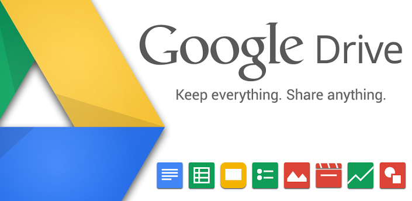

Google is one of the five most popular websites in the world. Google is a web search engine that lets you find other sites on the web based on keyword searches. Google also provides specialized searches through blogs, catalogs, videos, news items and more.
Google provides Internet services that let you create blogs, send email, and publish web pages. Google has social networking tools, organization tools, and chat tools, services for mobile devices, and even Google branded merchandise.
First New: Google Glass

Google Glass is a controversial wearable computer with a head-mounted display (HMD) that is being developed by Google in the Project Glass research and development project, with the mission of producing a mass-market ubiquitous computer. Google Glass displays information in a smartphone-like hands-free format, that can interact with the Internet via natural language voice commands. While the frames do not currently have lenses fitted to them, Google is considering partnering with sunglass retailers such as Ray-Ban or Warby Parker, and may also open retail stores to allow customers to try on the device. The Explorer Edition cannot be used by people who wear prescription glasses, but Google has confirmed that Glass will eventually work with frames and lenses that match the wearer's prescription; the glasses will be modular and therefore possibly attachable to normal prescription glasses. Glass is being developed by Google X Lab, which has worked on other futuristic technologies such as driverless cars. The project was announced on Google+ by Project Glass lead Babak Parviz, an electrical engineer who has also worked on putting displays into contact lenses; Steve Lee, a product manager and "geolocation specialist"; and Sebastian Thrun, who developed Udacity as well as worked on the self-driving car project. Google has patented the design of Project Glass.Thad Starner, an AR expert, is a technical lead/manager on the project.
Second New:The smartphone from Google
Nexus 4 offers a pure Google experience with your favorite Google apps, Android™ 4.2 (Jelly Bean), and an amazing Photo Sphere camera for stunning 360-degree pictures. For the ultimate Nexus 4 experience, add unlimited data on a nationwide 4G network, only from T-Mobile—the only carrier to offer Nexus 4.If you need more information,Click on Nexus 4's Image.
Second New:About Google Drive
 If you've set up Google Drive offline, you can now create and edit drawings offline. In addition, all of your Google Docs, Sheets, and Slides will now be automatically available offline (space permitting), so you won't have to worry about remembering that specific file before catching your flight! It may take a few days to see these changes as we complete the rollout. If you haven’t used offline yet, give it a try today: Set up offline access.